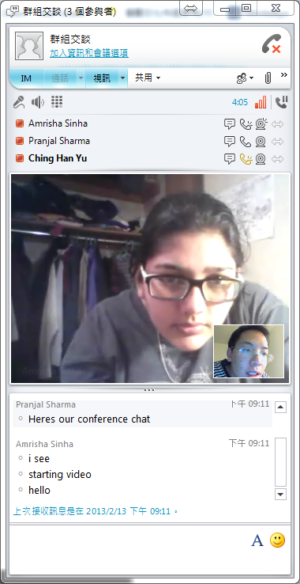
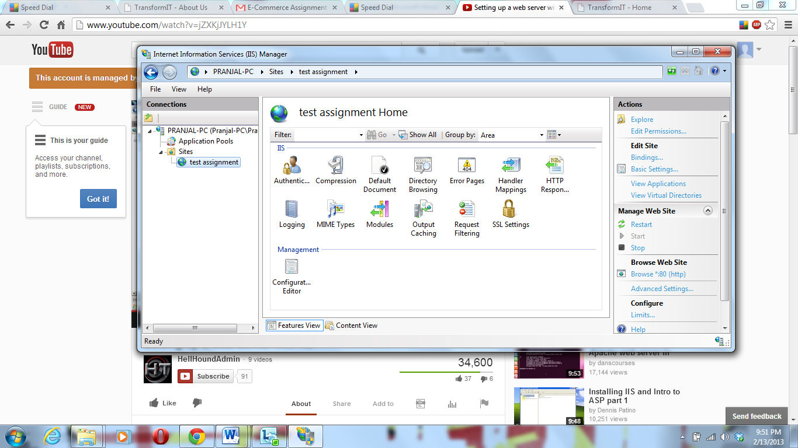

TransformIT
Building the future of IT

Assignment 1
Q1. Pick a business you are familiar with: real, planned, or imaginary.
Create a web page describing your business for the investors and creditors
of your business.
A1. Refer to our About Us page.
Q2. For one of your competitors, a. write a brief description of their business as
contrasted to yours; b. describe what your competitive advantage might be;
c. create a
link to their web site; d. include their company logo or other similar graphics in the description.
A2. Refer to our About Us page.
Q3. a. Create a link to your email address in case your readers want to give you feedback.
b. Add a “like” button to your page so your visitors can easily post a link to your page from various
social media sites like facebook.
A3. a. Refer to our Contact Us page.
b. The social media sites buttons are displayed under the heading of each page.
Q4. Create a private discussion board for your users to leave comments, and to search your responses
to frequently asked questions.
A4. The discussion board is shown as follows:
Q5. Create a Zoho chat window on your web page for your readers to interact with you and all others currently
browsing your web page. Alternatively, create a Meebo bar on your web page for your readers to interact with you and
other browsers of your web page through social networks.
A5. We had both worked. The Zoho chat window is shown below, and Meebo bar can be seen at the buttom of each page.
Q6. Read the article on Online Education in your course packet, and review the lecture notes.
a. Explain how online education
can be a disruptive technology in education industry. What are the advantages of online education? What are the disadvantages?
b. Explain why disruptive technologies are often low quality initially. Why is low quality an advantage? How do they overcome
the quality issue? c. Do you anticipate any disruptive technologies in your business? If yes, how do you expect to counter the
threat; if no, why not?
A6. a. Online Education is certainly a disruptive technology with the setting of Massive Open Online
Courses — known as MOOCs by various universities. This is a disruptive technology since it is potent to change the class paradigm. It started
with a few people starting their own Youtube channels to share basic technology/interesting ideas. But, when it moved from a light minded videos
to well-respected professors from revered universities, it came out as being disruptive to the traditional school, which have spent a lot on the
infrastructure and is a total threat to the current. It has brought a change which was not a part of the mainstream education, hence being
termed ‘Disruptive.’
It certainly has its advantages such as reduction of tuition fees, time saving on travel as well as working professionals don’t have to leave
their jobs to study and even has the flexibility of studying what you want-when you want-where you want.
The primary disadvantages are lack of interpersonal communications, clearance of doubts are not possible in real time, communication exposure
that you otherwise get in schools.
b. One of the reason for the low quality is that it takes time to actually realize the Network Effects. Another reason for the
quality could be that it takes time for every new system to be absorbed, matured and finally adopted. In this context, there are only a few
courses available through MOOCs. As the number of students rises, this concept could hit-it-off and could attract more professors from all
around the world and realize this as a mature system.
To improve further:
1. There should be proper curriculum for the MOOCs at most of the universities and a proper testing mechanism should be developed
2. There should be a possibility for synchronous communication and possible use of i-clickers by home users to ask questions
3. Courses should be marketed in every country to bring reliability to the courseware.
c. We are in a time where we have come out of the initial disruptive. Traditional outsourcers like IBM and HP used to do a black
box model of outsourcing where the strategic ownership was with the vendors which made the customers free from all the complexities of technologies.
Also, due to compatibility issues, the customer had to choose all the products from the same outsourcers. We inverted the pyramid and left the
strategic control to the owner, which had little knowledge of IT. Initially, it was not easily adopted since the model was not mature enough. But
we initiated a wave of transformation giving the customer flexibility and control and hence change the paradigm of IT outsourcing, making it
disruptive.
We are implementing the same model for Cloud Computing which could be equally disruptive. We expect to counter the threat by forming strategic
relationships with the existing vendors and working with them on new Cloud solutions.
Q7. a. What are (positive) Network Effects? Give an example of a product with network effects, and explain.
b. Are there
network effects in any product in your business? If yes, explain why and what your strategy is to use those network effects
to your advantage. c. Does fashion and reputation affect the value of your products? Can they lead to network effects?
d. Read the article on Network Effects on the Web, and explain the economic problems caused by Network effects. Give an example.
A7. a. A Positive Network Effect is the effect that the use of a particular product has on its value to other places. In other
words, the action of using product x increases its value to other users. These effects are largely seen for products which
have a social or communication component to it. Initial users gain no value from adopting a technology which relies on network
effects; this is not the case for subsequent users. As demonstrated in class, communications devices such as fax machines only
help their user, if there are other users to receive faxed messages. The adoption of fax machines into today’s professional
society demonstrates network effect, despite having been invented in the mid 1840’s, they didn’t catch on till ~ 100 years later
when the user base had significantly increased.
b. No. Our firm does not offer any products which exhibit network effects.
c. Fashion and Reputation can lead to network effects indirectly. The main goal, in order to see positive network effects, is
to draw more users to the product. Fashion and Reputation indirectly do lead to network effects because they help a product
attract more users to it. Magazines are a good example of demonstrating how reputation can lead to positive network effects.
More readers lead to an increase in reputation which will attract better authors/writers. A higher quality of writers will
attract more readers, thereby establishing the product more securely.
d. Network effects on the Web leads to information monopolies. Because the market depends largely on a single large network,
each additional user tends to “go with the flow” making it easier for one company to monopolize the market. Facebook has
nearly monopolized the social media market, while Google has become the go – to search engine that makes life easier for all.
Monopolies tend to lead to an era of stagnation, as there is no need to spend effort developing new technology. This can go
on to affect the public in subtle ways.
Q8. Download Visual Route from
http://visualroute.visualware.com and send a test message from your computer
to mit.edu or any other university, and see the path the message follows. See where the
slowest nodes are. Copy a screenshot of the path to your a1 page. Alternatively, if you don’t want to download, you can test
the connection speed from your computer to one of the standard locations in the world at
http://myspeed.visualware.com, and copy the screenshot of the path to your a1 page.
A8. The screen shot is shown as follows:
Q9. a. Access your teammate’s computer from your computer using Windows 7,
Windows Vista Pro, Windows XP Pro, logmein.com, or gotomypc.com. Copy a screen shot of your teammate’s desktop as seen from
your computer to your web page. b. Explain what the teammate sees on his computer, while it is being accessed
by your computer. Are there any warnings? Can he tell it is being remotely accessed? How is it protected from unauthorized
access?
A9. The screen shot is shown as follows. a. We use
TeamViewer to connect two computers. When connected by a client, the host computer
pops a window on the buttom right of the screen, telling that it is controlled by another computer. The client will be asked to
enter the password for access. b. After typing in the correct password, the client can see the same desktop as that on the host
computer except the wallpaper. Hence, the host computer is protected by a password against unauthorized access.
Q10. Economist Robert Solow argues that Information Technologies (IT) do not lead to more productivity,
because during the periods of intense investment into IT, the productivity of the average American worker did not improve.
a. List the arguments against him. b. List the evidence supporting your arguments.
c. Explain how network effects could be relevant to your arguments.
A10. a. Robert Solow’s argument that IT does not lead to productivity is a flawed view of the phenomenon behind IT
adoption at the organizational level. Possible explanations for his observations are:
There is a delay in productivity due to:
1. Learning curve and
2. BPR - business process reengineering.
b. Immediately after an organization spends money on there is an immediate time cost associated with the
acquisition – that of learning time. It is necessary to allow for some slack in profits while the employees adapt to using new
technology for a process they are familiar with. Over time, if the integration of IT has been handled effectively there will
definitely be an improvement in the productivity of the employees. This will however take time to show up in the graphs.
The other reasoning, is that it takes time to reengineer the business process so that it fits the tool acquired (Tool- Task Fit).
It may take a few adjustments in order to reach the most profitable business plan to suit the new technologically advanced model
adopted.
c. The learning curve argument (a-1) is most closely tied to network effects. There may be some initial hesitance by the employees
to adapt to the new technology. However, as more of the staff catches on to the benefits, the faster its integration will be.
Q11. a. What is a virtual corporation? b. What are the advantages and disadvantages of virtual
corporations? c. Read the article titled “Virtual Corporation Concepts”, and explain how the management consulting
firm InterSolve operates as a virtual corporation. d. Explain how you could convert your business to a virtual
corporation. If your business cannot be converted to a virtual corporation, explain if universities can be converted to virtual
corporations and how.
A11. a. A virtual corporation is a group of individuals, or businesses that can assemble online
for a specific purpose or goal. The entities involved can assemble online without having to incorporate formally or form a
traditional company.
b. Forming virtual corporations allow people to come together ad-hoc for specific projects. It also allows the
separate entities involved to take advantage of each other’s resources, such as access to information or even talent. VC’s tend
to be a good model for travel agencies since a local travel agency can collaborate with one at the destination to provide the
user with the best possible experience. Conversely, it means that each entity has less control over the part of the project
being handled by another company. There is also less accountability across the entities in such a model, other risks include the
loss of proprietary of privileged information when one is in such a cross organizational group.
c. The consulting firm InterSolve consists largely of 4 partners located in Dallas. When presented with a challenge,
they from project teams out of talent in other organizations that fit s the task at hand. They do now “warehouse” specialist to whip
out at any opportunity, however, they offer their client a more specialized solution because they have managed to fit the team to the
project and not the project to the team. These teams disband upon the completion of a project.
Q12. a. Use MS Office 365 with Lync conferencing and collaboration software for text/audio/video
conferencing and synchronous document sharing. Copy a screen shot of your conferencing, and document sharing to your a1 page. Describe
the ease of use of the system, and the problems you experienced.
Alternatively, use Webex conferencing software at
www.webex.com for text/audio/video conferencing and synchronous document sharing.
Copy a screen shot of your conferencing, and document sharing to your a1 page. Describe the ease of use of the system and the problems
you experienced.
Alternatively, use Windows Messenger with Shared View conferencing and collaboration software for text/audio/video conferencing, and
synchronous document sharing. Copy a screen shot of your conferencing, and document sharing to your a1 page. Describe the ease of use
of the system, and the problems you experienced.
b. Use Google Docs for text conferencing and synchronous document sharing. Copy a screen shot of your conference and
document sharing to your a1 page, and describe the ease of use of the system, and the problems you experienced.
Alternatively, use Windows Live for synchronous document sharing. Open a Windows Live account and save some files in the cloud
Skydrive at http://skydrive.live.com and provide public access to them. Then use MS WORD 2010 to synchronously edit one of your public
files with your teammate. Copy a screen shot of your document sharing to your a1 page, and describe the ease of use of the system and
the problems you experienced.
Alternatively, use synchronous document sharing tool at Raindance at
www.intercall.com, or Gotomeeting at
www.gotomeeting.com. They
both have free trial versions you can download, although some will require a credit card and require you to cancel before they charge
you. Copy a screen shot of your synchronous document sharing to your a1 page, and describe the ease of use of the system and the
problems you experienced.
A12. a. We initiated a video conferencing by using MS Lync 2010, and we had no trouble using it.
Request to Join

Text Messages
Voice Call
Document Sharing

Video Conferencing

b. We used Google Doc service to share the file. And again, we had no trouble.
File Sharing
Synchronous Editing
Conference During Editing
Q14. a. Convert your own computer to a web server. Place your a1 document on your server, and
make it accessible by any browser. b. Use WEBDAV protocol to make a document on your computer accessible and
asynchronously shared by others.
A14. a. We installed MS Ineternet Information Service on a PC running MS Windows 7.
The administration interface

Root folder
Web browsing
Instructions
This is a mock website for the course NBA 6010 - Electronic Commerce given by Prof. Levent V. Orman at Samuel Curtis Johnson Graduate School of Management, Sage Hall, Cornell University, Ithaca, NY 14853-6201.
Team Members:
Amrisha Sinha, Ching-han Yu, and Pranjal Sharma